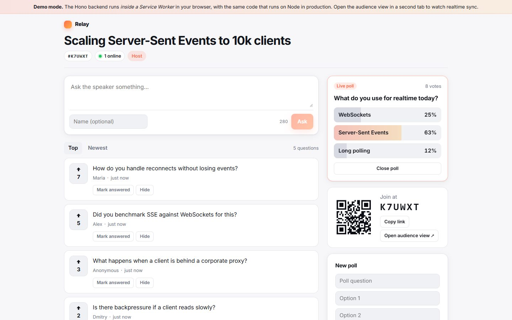

01 Fullstack · realtime
Relay
Live Q&A and polls for talks, in the spirit of Slido. The audience asks and upvotes questions, the host moderates and runs polls, and everything updates in real time.
- Hono API on Node: SQLite with migrations and constraints, Zod validation, RFC 7807 errors
- Server-Sent Events with personalised snapshots and moderation-aware fan-out
- HMAC-signed sessions, rate limiting, Docker; 45 tests, including the SSE stream itself
TypeScript · Hono · SQLite · SSE · React · Docker
The live demo runs the same backend code inside a Service Worker.